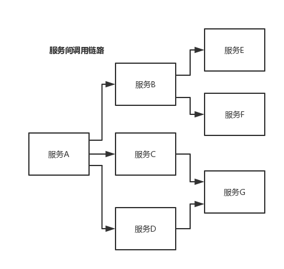

如何基于 dubbo 进行服务治理、服务降级、失败重试以及超时重试？
服务治理
1. 调用链路自动生成
一个大型的分布式系统，或者说是用现在流行的微服务架构来说吧，分布式系统由大量的服务组成。那么这些服务之间互相是如何调用的？调用链路是啥？说实话，几乎到后面没人搞的清楚了，因为服务实在太多了，可能几百个甚至几千个服务。
那就需要基于 dubbo 做的分布式系统中，对各个服务之间的调用自动记录下来，然后自动将各个服务之间的依赖关系和调用链路生成出来，做成一张图，显示出来，大家才可以看到对吧。

2. 服务访问压力以及时长统计
需要自动统计各个接口和服务之间的调用次数以及访问延时，而且要分成两个级别。
一个级别是接口粒度，就是每个服务的每个接口每天被调用多少次，TP50/TP90/TP99，三个档次的请求延时分别是多少；
第二个级别是从源头入口开始，一个完整的请求链路经过几十个服务之后，完成一次请求，每天全链路走多少次，全链路请求延时的 TP50/TP90/TP99，分别是多少。
这些东西都搞定了之后，后面才可以来看当前系统的压力主要在哪里，如何来扩容和优化啊。
3. 其它
- 服务分层（避免循环依赖）
- 调用链路失败监控和报警
- 服务鉴权
- 每个服务的可用性的监控（接口调用成功率？几个 9？99.99%，99.9%，99%）
服务降级
比如说服务 A 调用服务 B，结果服务 B 挂掉了，服务 A 重试几次调用服务 B，还是不行，那么直接降级，走一个备用的逻辑，给用户返回响应。
举个栗子，我们有接口 HelloService。HelloServiceImpl 有该接口的具体实现。
public interface HelloService {
void sayHello();
}
public class HelloServiceImpl implements HelloService {
public void sayHello() {
System.out.println("hello world......");
}
}Copy to clipboardErrorCopied
<?xml version="1.0" encoding="UTF-8"?>
<beans xmlns="http://www.springframework.org/schema/beans"
xmlns:xsi="http://www.w3.org/2001/XMLSchema-instance" xmlns:dubbo="http://code.alibabatech.com/schema/dubbo"
xsi:schemaLocation="http://www.springframework.org/schema/beans http://www.springframework.org/schema/beans/spring-beans.xsd http://code.alibabatech.com/schema/dubbo http://code.alibabatech.com/schema/dubbo/dubbo.xsd">
<dubbo:application name="dubbo-provider" />
<dubbo:registry address="zookeeper://127.0.0.1:2181" />
<dubbo:protocol name="dubbo" port="20880" />
<dubbo:service interface="com.zhss.service.HelloService" ref="helloServiceImpl" timeout="10000" />
<bean id="helloServiceImpl" class="com.zhss.service.HelloServiceImpl" />
</beans>
<?xml version="1.0" encoding="UTF-8"?>
<beans xmlns="http://www.springframework.org/schema/beans"
xmlns:xsi="http://www.w3.org/2001/XMLSchema-instance"
xmlns:dubbo="http://code.alibabatech.com/schema/dubbo"
xsi:schemaLocation="http://www.springframework.org/schema/beans http://www.springframework.org/schema/beans/spring-beans.xsd http://code.alibabatech.com/schema/dubbo http://code.alibabatech.com/schema/dubbo/dubbo.xsd">
<dubbo:application name="dubbo-consumer" />
<dubbo:registry address="zookeeper://127.0.0.1:2181" />
<dubbo:reference id="fooService" interface="com.test.service.FooService" timeout="10000" check="false" mock="return null">
</dubbo:reference>
</beans>
Copy to clipboardErrorCopied
我们调用接口失败的时候，可以通过 mock 统一返回 null。
mock 的值也可以修改为 true，然后再跟接口同一个路径下实现一个 Mock 类，命名规则是 “接口名称+Mock” 后缀。然后在 Mock 类里实现自己的降级逻辑。
public class HelloServiceMock implements HelloService {
public void sayHello() {
// 降级逻辑
}
}Copy to clipboardErrorCopied
失败重试和超时重试
所谓失败重试，就是 consumer 调用 provider 要是失败了，比如抛异常了，此时应该是可以重试的，或者调用超时了也可以重试。配置如下：
<dubbo:reference id="xxxx" interface="xx" check="true" async="false" retries="3" timeout="2000"/>Copy to clipboardErrorCopied
举个栗子。
某个服务的接口，要耗费 5s，你这边不能干等着，你这边配置了 timeout 之后，我等待 2s，还没返回，我直接就撤了，不能干等你。
可以结合你们公司具体的场景来说说你是怎么设置这些参数的：
timeout：一般设置为200ms，我们认为不能超过200ms还没返回。retries：设置 retries，一般是在读请求的时候，比如你要查询个数据，你可以设置个 retries，如果第一次没读到，报错，重试指定的次数，尝试再次读取。